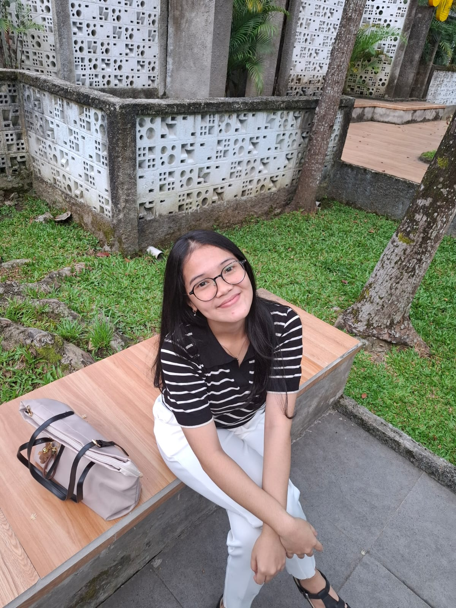

<!DOCTYPE html>
<html lang="id">
<head>
<meta charset="UTF-8">
<meta name="viewport" content="width=device-width, initial-scale=1.0">

<title>DigiPath | Level Up Your Skills</title>

    
</body>
</html>

<link href="https://fonts.googleapis.com/css2?family=Poppins:wght@400;600&display=swap" rel="stylesheet">

<style>

*{
margin:0;
padding:0;
box-sizing:border-box;
font-family:'Poppins',sans-serif;
}

html{
scroll-behavior:smooth;
}

nav{
display:flex;
justify-content:space-between;
align-items:center;
padding:20px 70px;
background:#ffffff;
position:sticky;
top:0;
z-index:100;
box-shadow:0 3px 12px rgba(0,0,0,0.08);
}

.logo{
    font-family: 'Great Vibes', cursive;
    font-size:32px;
    font-weight:bold;
    color:#1f1f1f;
    letter-spacing:1px;
}

nav ul{
display:flex;
gap:35px;
list-style:none;
}

nav a{
text-decoration:none;
color:#444;
font-weight:500;
transition:.3s;
}

nav a:hover{
color:#000;
}

.hero{
height:100vh;
background:url("https://images.unsplash.com/photo-1507842217343-583bb7270b66") center/cover;
display:flex;
justify-content:center;
align-items:center;
}

.overlay{
width:100%;
height:100%;
background:linear-gradient(
rgba(30,30,30,0.75),
rgba(80,80,80,0.75)
);
display:flex;
flex-direction:column;
justify-content:center;
align-items:center;
text-align:center;
color:white;
padding:40px;
}

.overlay h1{
font-size:48px;
font-weight:700;
letter-spacing:1px;
}

.overlay p{
margin-top:12px;
font-weight:300;
opacity:.9;
}

.search{
margin-top:30px;
display:flex;
gap:10px;
}

.search input{
padding:14px 18px;
width:340px;
border-radius:30px;
border:none;
outline:none;
background:#f1f1f1;
}

.search button{
border:none;
padding:14px 20px;
border-radius:30px;
background:#2c2c2c;
color:white;
cursor:pointer;
transition:.3s;
}

.search button:hover{
background:#000;
}

.about{
padding:90px;
background:#f4f4f4;
}

.about-container{
display:flex;
align-items:center;
gap:50px;
flex-wrap:wrap;
}

.about img{
width:270px;
border-radius:18px;
box-shadow:0 10px 25px rgba(0,0,0,0.15);
}

.about-text{
max-width:600px;
}

.about-text h2{
margin-bottom:15px;
color:#222;
}

.buttons{
margin-top:25px;
}

.btn{
text-decoration:none;
padding:12px 24px;
border-radius:25px;
background:#2b2b2b;
color:white;
margin-right:10px;
display:inline-block;
transition:.3s;
}

.btn:hover{
transform:translateY(-3px);
background:#000;
}

.instagram{
background:#555;
}

.media{
padding:90px;
text-align:center;
background:white;
}

.media h2{
margin-bottom:30px;
color:#222;
}

iframe{
max-width:100%;
border-radius:15px;
box-shadow:0 10px 25px rgba(0,0,0,0.15);
}

footer{
text-align:center;
padding:25px;
background:#1f1f1f;
color:white;
font-size:14px;
}

/* ===== NAVBAR LAYOUT ===== */
nav{
display:flex;
align-items:center;
justify-content:space-between;
padding:20px 60px;
background:white;
position:sticky;
top:0;
box-shadow:0 3px 12px rgba(0,0,0,0.08);
}

.menu{
display:flex;
gap:30px;
list-style:none;
}

.nav-search input{
font-family:'Montserrat', sans-serif;
padding:12px 20px;
width:220px;
border-radius:30px;
border:none;
outline:none;
font-size:15px;
background:linear-gradient(145deg,#f0f0f0,#ffffff);
box-shadow:
inset 3px 3px 6px rgba(0,0,0,0.08),
inset -3px -3px 6px rgba(255,255,255,0.9);
transition:0.3s;
}

.nav-search input:focus{
width:260px;
box-shadow:0 0 10px rgba(0,0,0,0.15);
}

.subtitle{
margin-top:10px;
margin-bottom:35px;
color:#666;
text-align:center;
}

/* GRID GALERI */
.video-grid{
display:grid;
grid-template-columns:repeat(auto-fit,minmax(300px,1fr));
gap:30px;
padding:0 40px;
}

.video-card{
background:#f3f3f3;
padding:15px;
border-radius:15px;
box-shadow:0 6px 15px rgba(0,0,0,0.1);
transition:0.3s;
text-align:center;
}

.video-card:hover{
transform:translateY(-6px);
}

.video-card iframe{
width:100%;
height:200px;
border-radius:10px;
border:none;
}

.video-card p{
margin-top:12px;
font-weight:600;
color:#333;
}

/* ===== AUDIO SECTION ===== */

.audio-section{
    padding:80px 20px;
    background:#f5f7fb;
}

/* ini yang memaksa semua isi ke tengah */
.audio-center{
    width:100%;
    display:flex;
    justify-content:center;
    align-items:center;
    flex-direction:column;
    text-align:center;
}

/* card audio */
.audio-card{
    margin-top:25px;
    width:420px;
    max-width:90%;
    background:white;
    padding:25px;
    border-radius:18px;
    box-shadow:0 10px 25px rgba(0,0,0,0.15);
}

/* player */
.audio-card audio{
    width:100%;
    display:block;
}

nav{
    display:flex;
    justify-content:space-between;
    align-items:center;
    padding:20px 70px;
    background:white;
    position:sticky;
    top:0;
    box-shadow:0 3px 10px rgba(0,0,0,0.1);
}

.logo{
    font-size:26px;
    font-weight:bold;
}

.menu{
    display:flex;
    gap:35px;
    list-style:none;
}

.menu a{
    text-decoration:none;
    color:black;
    font-weight:500;
}

.nav-right{
    display:flex;
    align-items:center;
    gap:20px;
}

.nav-search input{
    padding:7px 12px;
    border-radius:6px;
    border:1px solid #ccc;
}

.login-menu{
    position:relative;
}

.login-btn{
    padding:8px 15px;
    border:none;
    background:#2c6ed5;
    color:white;
    border-radius:6px;
    cursor:pointer;
}

.dropdown-login{
    display:none;
    position:absolute;
    right:0;
    top:40px;
    background:white;
    box-shadow:0 4px 12px rgba(0,0,0,0.15);
    border-radius:6px;
    overflow:hidden;
    min-width:160px;
}

.dropdown-login a{
    display:block;
    padding:10px;
    text-decoration:none;
    color:black;
}

.dropdown-login a:hover{
    background:#f1f1f1;
}

.login-menu:hover .dropdown-login{
    display:block;
}

/* Tombol Saran */
#saranButton {
    position: fixed;
    bottom: 20px;
    right: 20px;
    background: #2c7be5;
    color: white;
    padding: 12px 18px;
    border-radius: 25px;
    cursor: pointer;
    font-weight: bold;
    box-shadow: 0px 4px 10px rgba(0,0,0,0.3);
}

/* Box Saran */
#saranBox {
    position: fixed;
    bottom: 80px;
    right: 20px;
    width: 250px;
    background: white;
    border-radius: 10px;
    padding: 15px;
    box-shadow: 0px 4px 15px rgba(0,0,0,0.3);
    display: none;
}

#saranBox input,
#saranBox textarea {
    width: 100%;
    margin-bottom: 10px;
    padding: 8px;
}

#saranBox button {
    width: 100%;
    background: #2c7be5;
    color: white;
    border: none;
    padding: 8px;
    cursor: pointer;
}

.logo {
    display: flex;
    align-items: center;
    gap: 10px;
    color: white;
    font-size: 20px;
    font-weight: bold;
}

/* ukuran gambar logo */
.logo-img {
    width: 40px;
    height: 40px;
    object-fit: cover;
}

.logo-img {
    width: 40px;
    height: 40px;
    border-radius: 50%; /* jadi bulat */
}

.logo {
    display: flex;
    align-items: center;
    gap: 10px;
}

.logo-img {
    width: 45px;
    height: 45px;
    border-radius: 50%;   /* membuat logo bulat */
    object-fit: cover;
}

.logo-text {
    font-size: 20px;
    font-weight: bold;
    color: black;
}

/* CONTAINER LOGO */
.logo {
    display: flex;
    align-items: center;
    gap: 12px;
}

/* GAMBAR LOGO BULAT */
.logo-img {
    width: 48px;
    height: 48px;
    border-radius: 50%;
    object-fit: cover;
    box-shadow: 0 2px 6px rgba(0,0,0,0.2);
}

/* TEKS NAMA PERPUSTAKAAN */
.logo-text {
    font-family: "Poppins", sans-serif;
    font-size: 22px;
    font-weight: 600;
    color: black;
    letter-spacing: 0.5px;
}

.logo:hover {
    transform: scale(1.03);
    transition: 0.3s;
}

    /* NAVBAR UTAMA */
.navbar {
    display: flex;
    align-items: center;
    justify-content: space-between;
    padding: 15px 30px;
}

/* MENU DI KANAN */
.menu {
    display: flex;
    gap: 25px;
    margin-left: auto;
}

.menu a {
    text-decoration: none;
    color: black;
    font-weight: 500;
    font-family: "Poppins", sans-serif;
}

.menu a:hover {
    color: #2c7be5;
}

/* LOGIN */
.login-menu {
    margin-left: 20px;
}

/* CSS Tambahan untuk Bento Grid */
.bento-section {
    padding: 80px 40px;
    background: #fdfdfd;
    text-align: center;
}

.bento-grid {
    display: grid;
    grid-template-columns: repeat(auto-fit, minmax(300px, 1fr));
    grid-auto-rows: 220px;
    gap: 20px;
    margin-top: 40px;
}

.bento-card {
    background: white;
    padding: 30px;
    border-radius: 20px;
    box-shadow: 0 10px 20px rgba(0,0,0,0.05);
    display: flex;
    flex-direction: column;
    justify-content: center;
    transition: 0.3s;
    border: 1px solid #eee;
}

.bento-card:hover { transform: translateY(-10px); box-shadow: 0 15px 30px rgba(0,0,0,0.1); }

/* Membuat variasi ukuran kotak agar terlihat seperti Bento */
.item-big { grid-row: span 2; background: #2c7be5; color: white; }
.item-big h3 { color: white !important; }
.item-big p { color: #e0e0e0; }

.bento-card h3 { margin-bottom: 10px; color: #2c7be5; font-size: 22px; }
.bento-card p { font-size: 14px; color: #666; } 

/* Animasi Judul */
.main-title {
    font-size: 56px;
    animation: float 3s ease-in-out infinite;
}

@keyframes float {
    0%, 100% { transform: translateY(0); }
    50% { transform: translateY(-15px); }
}

/* Efek Tombol Berdenyut (Pulse) */
.pulse {
    animation: pulse-animation 2s infinite;
}

@keyframes pulse-animation {
    0% { box-shadow: 0 0 0 0px rgba(44, 123, 229, 0.7); }
    100% { box-shadow: 0 0 0 20px rgba(44, 123, 229, 0); }
}

.highlight { color: #2c7be5; }

/* Styling Statistik Profil */
.profile-library-stats {
    display: flex;
    gap: 20px;
    margin-top: 20px;
}

.stat-item {
    background: #e9ecef;
    padding: 10px 15px;
    border-radius: 10px;
    font-size: 13px;
    font-weight: 600;
    color: #2c7be5;
}

.btn-hero {
    text-decoration: none;
    padding: 15px 30px;
    border-radius: 50px;
    background: #2c7be5;
    color: white;
    font-weight: bold;
    display: inline-block;
    margin: 10px;
}

.btn-hero.outline {
    background: transparent;
    border: 2px solid white;
}

.overlay p {
    min-height: 1.5em; /* Memberi ruang agar teks tidak 'anjlok' saat mulai mengetik */
    font-family: 'Poppins', sans-serif;
}

/* Latar Belakang Gradient yang Modern */
body {
    background: linear-gradient(135deg, #f5f7fa 0%, #c3cfe2 100%);
}

/* Card dengan Efek Kaca Transparan */
.bento-card, .video-card, .audio-card {
    background: rgba(255, 255, 255, 0.7) !important;
    backdrop-filter: blur(10px);
    border: 1px solid rgba(255, 255, 255, 0.3);
    border-radius: 25px !important; /* Buat lebih membulat/curvy */
    box-shadow: 0 8px 32px 0 rgba(31, 38, 135, 0.1) !important;
}

/* Tombol dengan Efek Glow */
.btn-hero, .btn, .login-btn {
    box-shadow: 0 4px 15px rgba(44, 123, 229, 0.4);
    transition: 0.4s !important;
}

.btn:hover {
    transform: scale(1.1) rotate(2deg) !important; /* Efek goyang sedikit saat hover */
}

.floating-icons .icon {
    position: absolute;
    font-size: 2rem;
    opacity: 0.2;
    animation: move 10s linear infinite;
}

@keyframes move {
    from { transform: translateY(100vh) rotate(0deg); }
    to { transform: translateY(-10vh) rotate(360deg); }
}
/* Atur posisi masing-masing ikon dengan left: 10%, 30%, dll */

/* Efek tombol 'Mulai Main' agar lebih kontras */
.item-big .btn {
    background: white !important;
    color: #2c7be5 !important;
    border-radius: 50px;
    padding: 10px 25px;
    font-weight: bold;
    margin-top: 20px;
    box-shadow: 0 4px 15px rgba(0,0,0,0.2);
}

/* Animasi sederhana agar kartu sedikit membesar saat disentuh (Hover) */
.bento-card:hover {
    transform: scale(1.03);
    transition: all 0.3s ease;
    border: 2px solid #2c7be5;
}
    
</style>
</head>

<body>

<nav>

    <div class="logo">
    
    <span class="logo-text">DigiSmart Library</span>
</div>

     <!-- BAGIAN KANAN -->
    <div class="nav-right">
        
   <ul class="menu">
            <li><a href="#beranda">Beranda</a></li>
            <li><a href="#bento">Fitur Literasi</a></li> <li><a href="#tentang">Profil</a></li>
            <li><a href="#Media">Media</a></li>
        </ul>
        
        <!-- LOGIN DROPDOWN -->
        <div class="login-menu">
            <button class="login-btn">Login ▾</button>

            <div class="dropdown-login">
                <a href="login.html">Login Anggota</a>
                <a href="daftar.html">Daftar Anggota</a>
            </div>
        </div>

    </div>

</nav>

</section>

<section id="beranda" class="hero">
    <div class="overlay">

        <div class="floating-icons">
            <span class="icon">📚</span>
            <span class="icon">💻</span>
            <span class="icon">🔍</span>
            <span class="icon">🎮</span>
            <span class="icon">🚀</span>
        </div>
        
        <div class="animate-box">
            <h1 class="main-title">DigiSmart <span class="highlight">Library</span></h1>
            <p class="typing-text">Menghapus Jarak, Memperluas Wawasan.</p>
        </div>
        
        <div class="quick-links">
            <a href="#bento" class="btn-hero pulse">🎮 Mulai Game Literasi</a>
            <a href="#Media" class="btn-hero pulse">📖 Materi Pelajaran</a>
            <a href="#tentang" class="btn-hero pulse">👤 Profil Pustakawan</a>
        </div>
    </div>
</section>

<section id="bento" class="bento-section">
    <h2>Pusat Literasi Digital</h2>
    <p>Fitur utama untuk membantu siswa SMP melawan kesenjangan digital.</p>

    <div class="bento-grid">
        <div class="bento-card item-big">
            <h3>Arcade Literasi 🎮</h3>
            <p>Admin menyediakan game interaktif agar siswa dapat menguji kemampuan kognitif dalam membedakan informasi valid dan hoaks.</p>
            <br>
            <a href="#" class="btn" style="background:white; color:#2c7be5;">Mulai Main</a>
        </div>

        <div class="bento-card">
            <h3>Pojok Baca 📚</h3>
            <p>Akses koleksi buku digital yang ringan dan hemat kuota data internet.</p>
        </div>

        <div class="bento-card">
            <h3>Media Belajar 🎥</h3>
            <p>Video micro-learning tentang cara riset tugas sekolah yang benar.</p>
        </div>

        <div class="bento-card">
            <h3>Hoax Buster 🔍</h3>
            <p>Alat deteksi dini untuk memverifikasi kebenaran sebuah berita.</p>
        </div>
    </div>
</section>
    
<section id="tentang" class="about">

<div class="about-container">



<div class="about-text">
    <h2>👤 Profil Pustakawan Sahabat</h2>
    
    <p>
        Halo, Sobat Digi! Saya <strong>Gressilliya Damanik</strong>, mahasiswa Perpustakaan dan Sains Informasi yang berfokus pada pengembangan <i>Digital Library</i> untuk masa depan. 
        Melalui platform <strong>DigiSmart</strong> ini, saya hadir sebagai partner belajar kalian dalam menjelajahi dunia digital yang luas tanpa batas.
    </p>

    <p style="margin-top: 10px; font-size: 14px; color: #555;">
        Tujuan utama saya adalah membantu kalian menjadi <b>"Detektif Informasi"</b> yang hebat—mampu menemukan sumber tugas yang valid dan kebal terhadap berita hoaks. Yuk, kembangkan literasi digital bersama!
    </p>

    <div class="about-buttons">
        <a href="cv.jpg" target="_blank" class="btn">
            Lihat CV
        </a>

        <a href="https://instagram.com/gressilliya" target="_blank" class="btn instagram">
            Instagram @gressilliya
        </a>

        <a href="about-detail.html" class="btn">
            Misi Literasi Saya
        </a>
    </div>
</div>

</div>
<section id="audio" class="audio-section">
    <div class="audio-center">
        <h2>🎧 Podcast & Fokus Literasi</h2>
        <p class="subtitle">Dengarkan musik pembangun fokus atau panduan suara seputar tips mencari informasi aman.</p>

        <div class="audio-card">
            <audio controls>
                <source src="lagu.mp3" type="audio/mpeg">
                Browser anda tidak mendukung audio.
            </audio>
            <p style="font-size: 12px; margin-top: 10px; color: #2c7be5; font-weight: bold;">
                Status: 🎵 Musik Fokus Sedang Diputar
            </p>
        </div>
    </div>
</section>

</div>

</section>

<section id="Media" class="media">

<h2>Media</h2>

<p class="subtitle">
Educational videos related to digital libraries, information literacy,
and modern library technology.
</p>

<div class="video-grid">

<!-- VIDEO 1 -->
<div class="video-card">
<iframe src="https://www.youtube.com/embed/6FByj7-Aj60"
title="Digital Library"
allowfullscreen></iframe>
<p>Digital Library</p>
</div>

<!-- VIDEO 2 -->
<div class="video-card">
<iframe src="https://www.youtube.com/embed/x6H8jpbcI0U"
title="Information Literacy"
allowfullscreen></iframe>
<p>Information Literacy</p>
</div>

<!-- VIDEO 3 -->
<div class="video-card">
<iframe src="https://www.youtube.com/embed/np7gg88v-Ow"
title="Library Technology"
allowfullscreen></iframe>
<p>Library Technology</p>
</div>

</div>

</section>

<footer>
© Gressilliya Damanik  — Website Digital Library  2026  
</footer>

<!-- BUTTON SARAN -->
<div id="saranButton" onclick="toggleSaran()">
    💬 Saran
</div>

<!-- BOX SARAN -->
<div id="saranBox">
    <h4>Kirim Saran</h4>

    <form action="kirim_saran.php" method="POST">
        <input type="text" name="nama" placeholder="Nama Anda" required>

        <textarea name="pesan" placeholder="Tulis saran anda..." required></textarea>

        <button type="submit">Kirim</button>
    </form>
</div>

<script>
function toggleSaran() {

    // ambil kotak saran
    var box = document.getElementById("saranBox");

    // jika sedang tampil → sembunyikan
    if (box.style.display === "block") {
        box.style.display = "none";
    } 
    // jika sedang tersembunyi → tampilkan
    else {
        box.style.display = "block";
    }
}
</script>

<script>
    // Animasi Teks Mengetik Sederhana
    const text = document.querySelector(".overlay p");
    const strText = text.textContent;
    text.textContent = "";
    let i = 0;

    function typeWriter() {
        if (i < strText.length) {
            text.textContent += strText.charAt(i);
            i++;
            setTimeout(typeWriter, 50);
        }
    }
    window.onload = typeWriter;
</script>
    
</body>
</html>
